Hi everyone! My name is Caroline Hermans, and I’m a senior studying ECE and Art. Throughout my time at Carnegie Mellon I’ve done a lot of stuff, such as winning awards, getting internet famous, and building an iPhone feature that actually shipped.
I’ve also had serious struggles with my identity, with my mental health, and with what it means to be a citizen of Carnegie Mellon.
Today, I’m going to talk about both sides of what I’ve been through.
I tried to sit down and write about myself, but all I came up with was this map. Now, this is a little complex, so I’d like to break my map-journey down, starting with my freshman year.
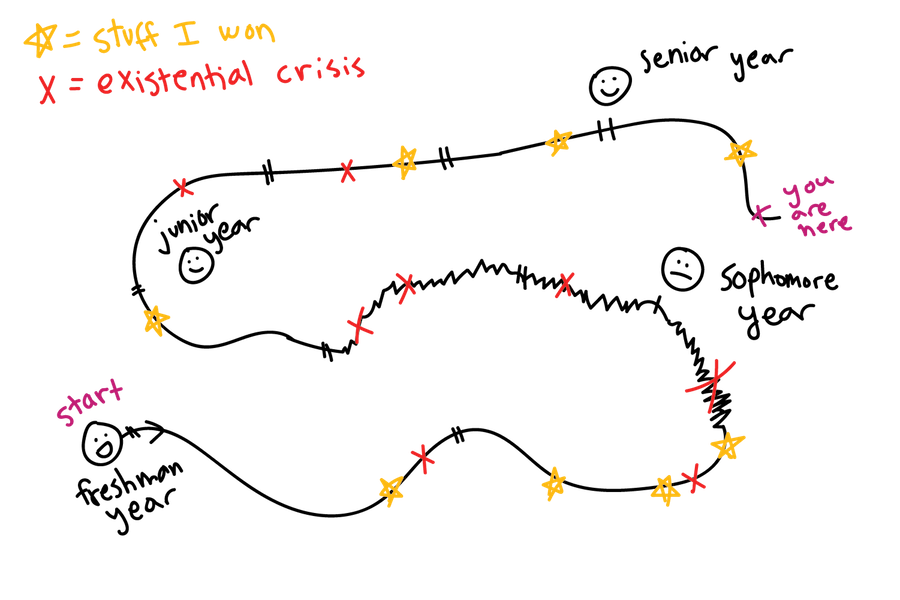I started freshman year as a materials science major, not really knowing what that was. All I knew was that in high school, I was pretty good at math and science. Later in the year, I checked out ECE, and thought it was pretty cool. I'll get to that scraggly line later.
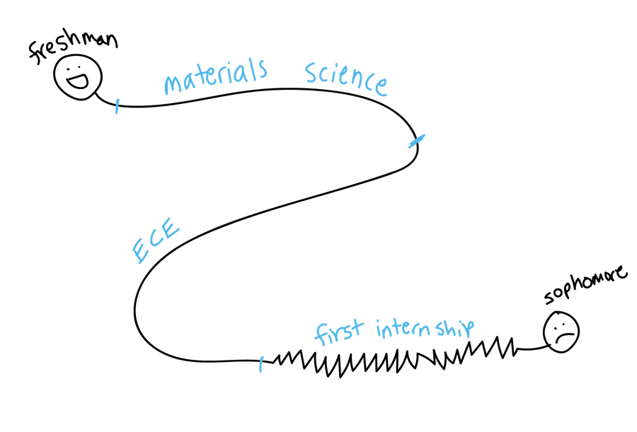This year, I was on top of the world. Some of my friends and I went to a hackathon, and we won first place. We kept going to hackathons, and kept making projects and winning prizes. At the end of the year, I finally finished my first solo project for 112, and my video got famous on Reddit overnight.
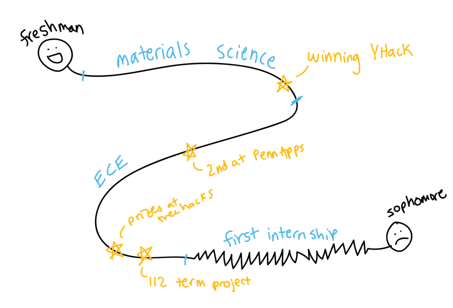I was also freaking out all the time. I wasn't as good at coding as my friends were. Did I deserve to be on those winning teams? I switched out of materials science to ECE. Then I finished up the year with a horrible internship at a truly boring company that wasn't used to having female software engineers. I was getting worried about my motivations for studying what I was studying.
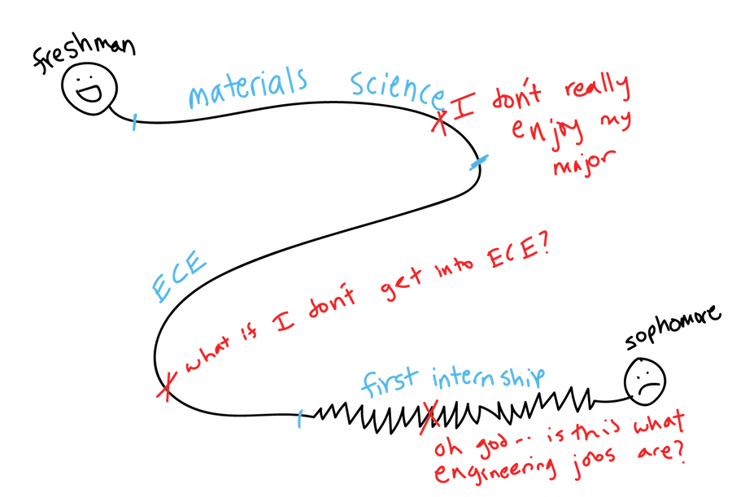Those experiences set me up for a tumultuous sophomore year.
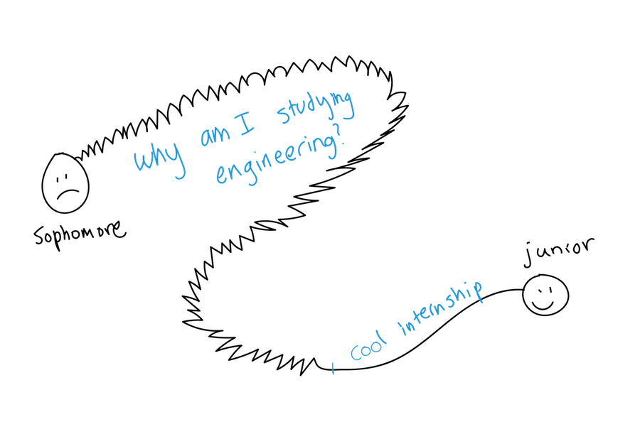Not only was I shaky on my reasons for studying ECE, I was shaky on ECE itself. Even throughout freshman year I always got top grades, but now I was struggling to keep up in any of my classes. I was pulling constant all nighters, buried in math and computer engineering topics. I needed a creative outlet, but I didn't have time for that. It's around this time I started having fairly regular panic attacks. What if I'm not good enough? What if I'm stupid? How am I possibly going to pass these classes?
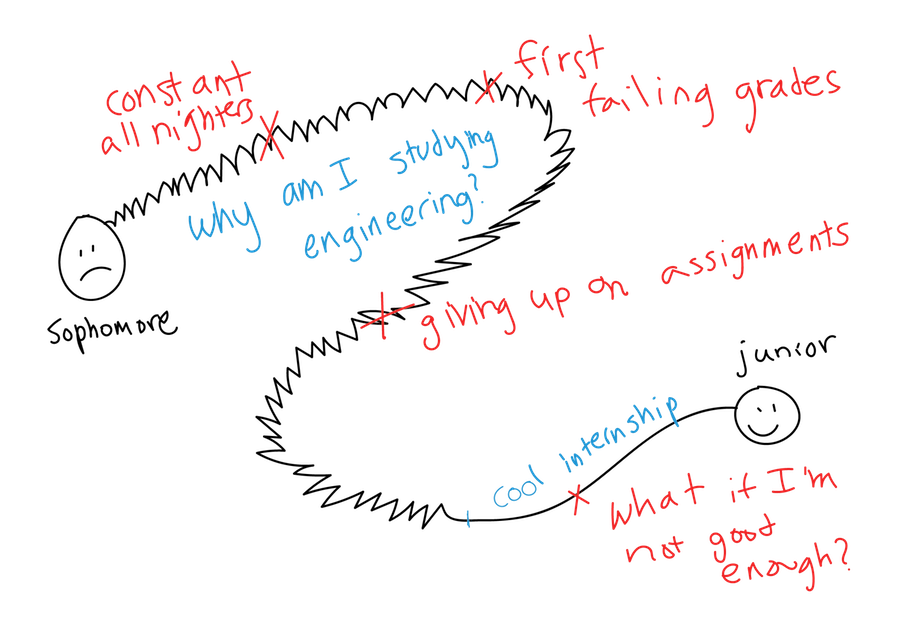At the end of the year, I was blessed to land an internship that finally made me excited about software engineering again. My team at Apple was incredibly fun and supportive, and they allowed me to work on creative and exciting projects. Even though I would still have the occasional panic attack at the possibility that I wasn't good enough, this summer really helped me regain motivation. The work I did here turned into real features in iOS 11.
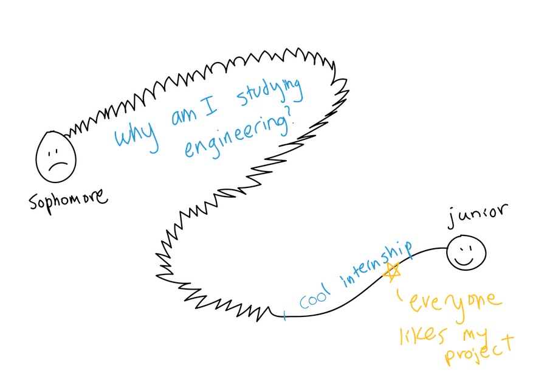That creative outlet was calling out to me. I used to be an artist in high school, and I gave up on that to start my career as a serious engineer. But art was more than just a hobby, it was something I needed in my life. I signed up for an art course.
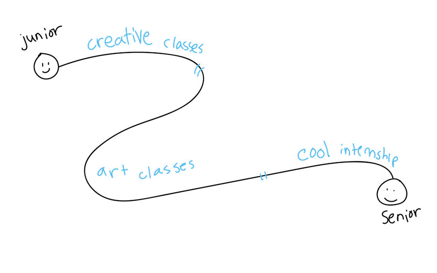Signing up for an art class the next fall changed my life. I could see the reason for studying ECE again, the reason I wanted to be an engineer in the first place: it allowed me to make cool stuff. It was such an incredible experience that I transferred into BXA as a second-semester junior, becoming the first student to do BXA's new engineering and art program.
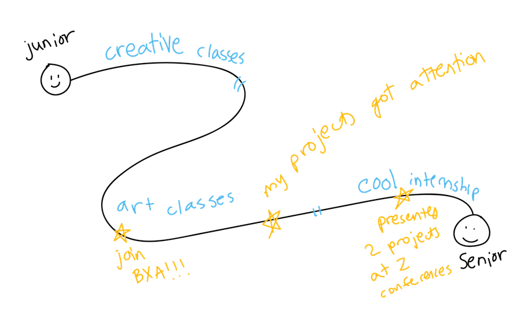Well, I should say I was almost back. Even though I enjoyed my courses more and felt motivated again, I still was panicking fairly regularly. I would put off an assignment, and then break down thinking about how I had put it off. Even though I was enjoying myself more, my mental state was actually getting worse. I set up an appointment with CAPS, and the panic attacks began to fade.
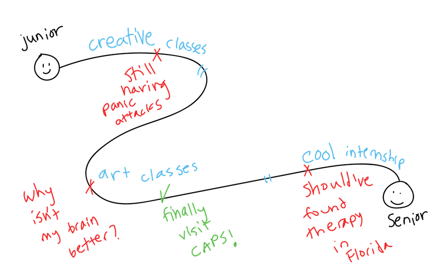Now, I find meaning in my studies the way I never did my freshman or sophomore years. I had the opportunity to do another hackathon with some friends this semester, which was a great experience. My anxiety is much better, but it still is and always will be a part of who I am. And I can't wait to finish my ECE major alongside art. Who knows what'll come after that? If it's anywhere near as crazy as my last three years, bring it on.
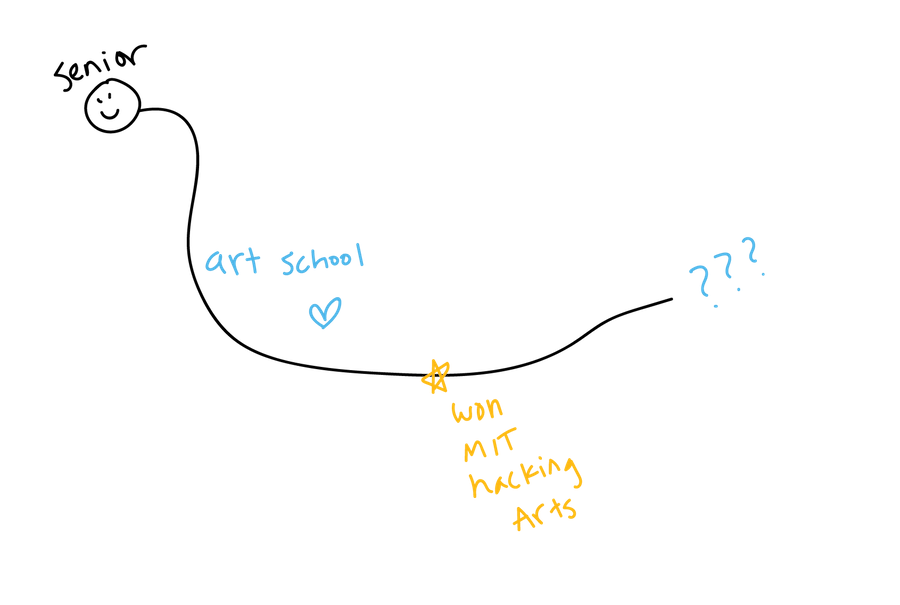The list of things I've achieved and the list of times I've freaked out about not achieving enough are probably about the same length. The people you see succeeding also fail, all the time.
Life circumstances may change, and goals come and go, but the quality of your thoughts will always be with you. It's up to every one of us to figure out how to treat ourselves and each other with kindness and respect.